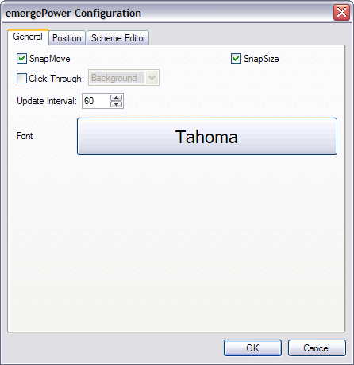
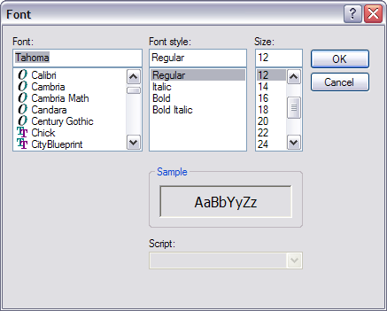
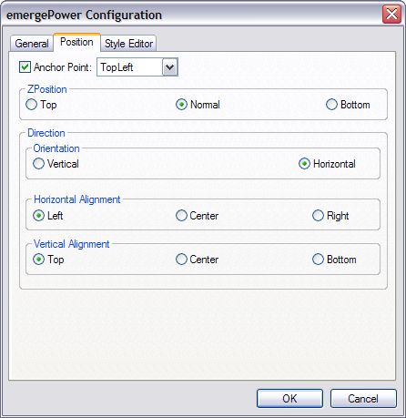

| About |
emergePower reports the status of battery power for laptops computers, in a movable and resizeable window.
| Configuration |
emergePower is configured by pressing the Ctrl key and right-clicking on the emergePower window. This opens the configuration menu:
About displays the module's author and version and the current style's path and filename.
Load Style allows the user to browse and select a Style File.
Reload Current Style allows to reload the current style after editing.
Configure displays the emergeLauncher configuration dialog box.
Exit closes the module. It can be restarted by highlighting it and clicking on the Start  button in the Launch Applet dialog box (see emergeCore).
button in the Launch Applet dialog box (see emergeCore).
After selecting Configure, the configuration dialog box opens. The first tab is General:

SnapMove makes the window snap to the edges of other applets' windows or the edges of the screen when moving it.
SnapSize makes the window snap to the edges of other applets' windows or the edges of the screen when changing its size.
Click Through allows clicking "through" the window (i.e. allows clicking on whatever is behind it).
Click Through has two modes: Full (the whole window is "transparent" to mouse input), or Background (only the background area is "transparent" but the user can click on the icons in emergeTray, emergeTasks, emergeLauncher, the text in emergeCommand, emergePower, the active mini-window in emergeVWM, the graphs in emergeSysMon).
Important notes: 1) Full Click Through works for any level of opacity, from opaque to fully transparent; 2) Background Click Through automatically sets the background to transparent but does not change the style, this is a known limitation; 3) To manipulate an applet set on Full Click Through, the user must press the Shift key: Shift+Ctrl+LeftClick to move the applet, Shift+Ctrl+RightClick to get the configuration menu and Shift+Alt to resize the applet.
Update Interval (Interval of Power reporting) is set in seconds.
Font brings up the font dialog box, which allows to select Font, Font style and Size of the text in the emergePower window:

The configuration dialog box's second tab is Position:

Anchor Point gives the choice of anchoring the window to the monitor's Top Left, Top Center, Top Right, Middle Left, Middle Center, Middle Right, Bottom Left, Bottom Center, or Bottom Right.
ZPosition defines the relative position of the window in the Z axis (i.e. from the screen to the user) and can be set to always on the Top, Normal (behaves as a regular program window), or always at the Bottom.
Orientation defines direction of the graph in the window as a column (Vertical) or as a row (Horizontal).
Horizontal Aligment of the text can be set on the Left of the window, the Center, or the Right.
Vertical Aligment of the text can be set at the Top of the window, in the Center, or at the Bottom.
For the configuration dialog box's third tab, see the Style Editor.
| Usage |
emergePower reports battery power information for laptop computers in the following ways:
A color filling part of the window indicates the amount of remaining power, and an other color fills the background.
A minus (-) sign means that the battery is discharging. The tooltip displays the time and the percentage of power remaining, and "Discharging".
A plus (+) sign means that the battery is charging. The tooltip displays the percentage of power remaining, and "Charging".
An equal (=) sign means that the battery is full. The tooltip displays "On AC power".
A number shows the percentage of power remaining.
On a desktop computer (with no battery), the window displays "AC Power".
To move the window, the user must press the Ctrl key, left-click on the window, and drag it to another location.
To resize the window, the user must press the Alt key, left-click on one edge of the window, and drag it to a new size.
The window position and size are stored in the applet's xml file, which is located in the User Profile folder under "\Application Data\Emerge Desktop\themes", in a subfolder with the same name as the current Theme. See Theme Manager for more details.
{kind=link}